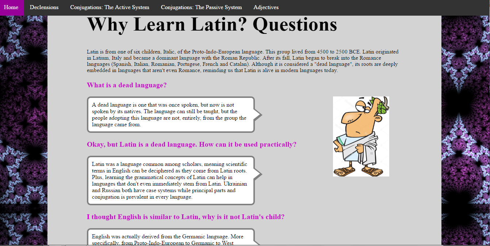
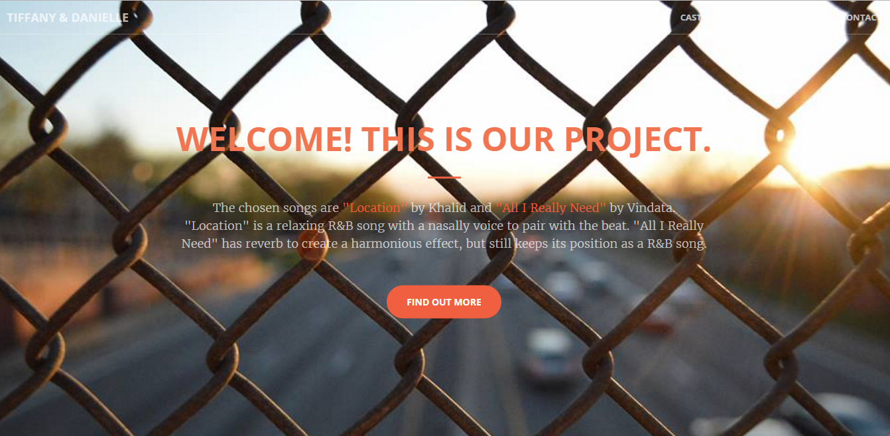

Latin Study Guide [INACTIVE]
This was a study guide meant for the final in my school. I shared this with those who found the amount of material learned over the year to be overwhelming.
Education, Website

Music Video Submission Page [INACTIVE]
After debating on the best way to inform our team members, we decided the best way to keep updates on the project was a website. This was a way for progress to be shown and for us to manage who is on the team. A benefit was publicity which would bring more viewers to the film contest we entered.
Marketing, Website, ManagementArt Portfolio
I wanted to have a platform to showcase my artworks and my progression as an artist. So this is a collection of all my work and basically a place to see my design skills.
Art, Design, Creativity